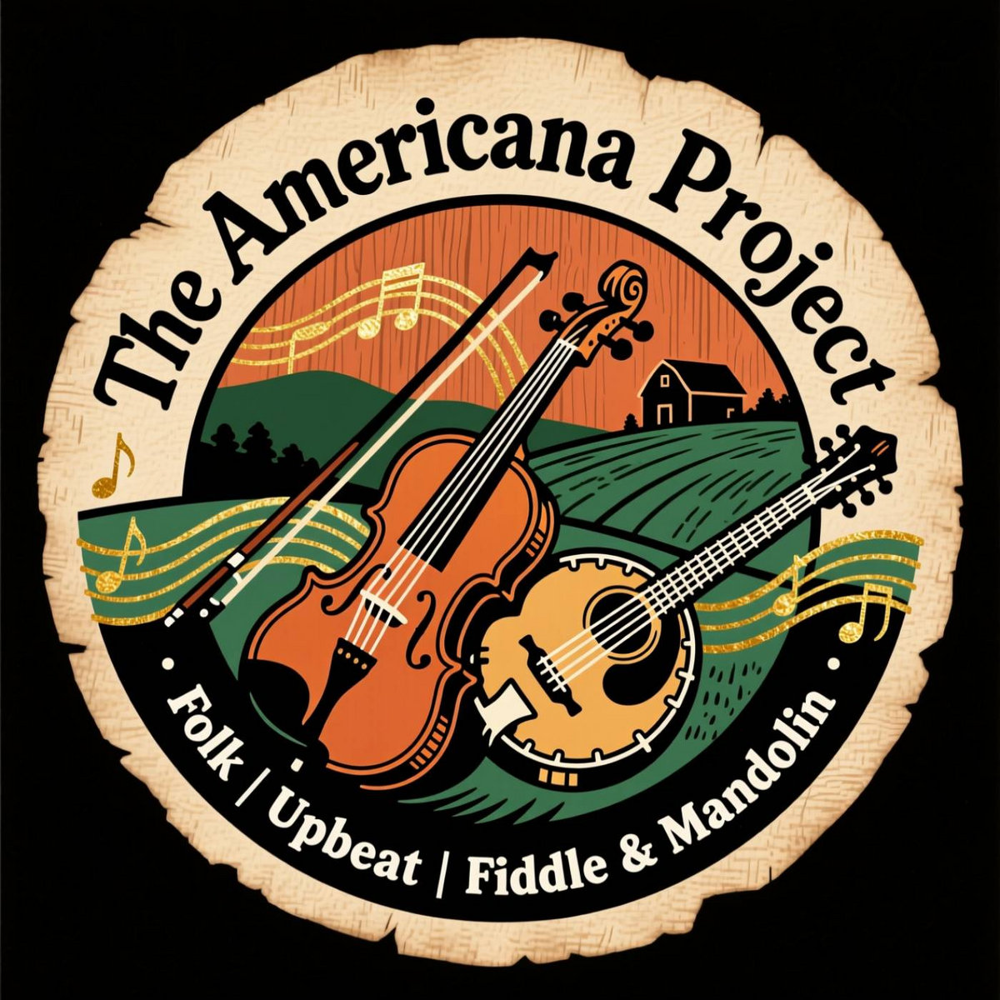

The Americana Project

The Americana Project: The Old Wood
Seven songs about the things that last, from the northern lights over western Massachusetts and the Pioneer Valley woods to Kitty Hawk, a Roman road at Sardis, and a comet over Bethlehem.
- Borrowed Time
- Comet of Bethlehem
- Cooler Days in Western Mass
- Kitty Hawk Revolution
- Northern Lights
- The Old Woods
- The Road Remembers